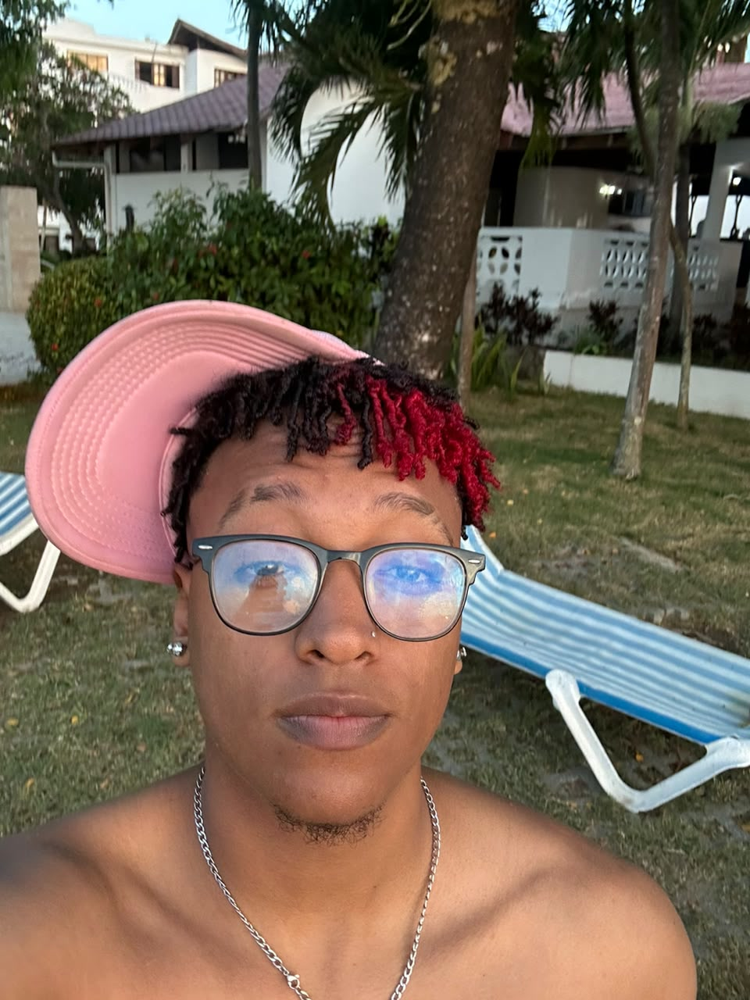

Diseñador gráfico
Caribbean Cinemas · 2026 – Actualidad
Diseño materiales gráficos y piezas publicitarias para campañas de comunicación y promoción.

Diseñador gráfico · Director creativo · Filmmaker
Santo Domingo, República Dominicana
engelsgm17@gmail.com +1 (809) 882-7158 Instagram de Ale StudiosSoy diseñador gráfico y director creativo con experiencia en diseño publicitario, fotografía, producción audiovisual y edición de video. Desarrollo conceptos creativos e identidades visuales para marcas y artistas.
Caribbean Cinemas · 2026 – Actualidad
Diseño materiales gráficos y piezas publicitarias para campañas de comunicación y promoción.
Ale Studios · 2025 – Actualidad
Dirijo proyectos audiovisuales, produzco videos musicales y desarrollo trabajos de fotografía e identidad visual.
LC Network / La Fábrica Radio · Hasta septiembre de 2026
Diseñé contenido digital y miniaturas, edité videos y participé en la producción audiovisual.
Instituto Tecnológico de Las Américas (ITLA)
En curso · 2026
Adobe Photoshop, Illustrator, Premiere Pro y DaVinci Resolve.
Fundé una marca creativa especializada en fotografía, diseño y producción audiovisual.
Ver Ale StudiosFormé parte del equipo que obtuvo el segundo lugar en el Proyecto 24-2025 del ITLA con esta producción audiovisual.
Desarrollé el concepto de una revista de arte y música enfocada en las nuevas generaciones.